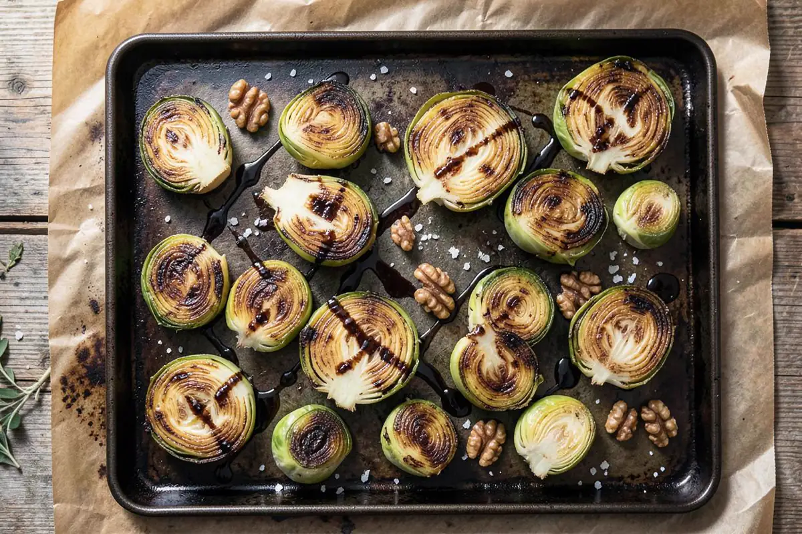

Roasted Brussels Sprouts with Balsamic

Illustrative image.
Most people who dislike Brussels sprouts have only had them boiled. Roasted cut side down on a hot pan, they turn sweet and nutty, with dark, crisp leaves that shatter and a tender centre underneath.
The technique is almost entirely about heat and space. Halve them, lay them face down, and leave them alone long enough to brown. That single habit fixes most of what goes wrong with sprouts.
Ingredients
- 1 1/2 lb Brussels sprouts, trimmed and halved lengthwise
- 3 tbsp olive oil
- 3/4 tsp kosher salt
- 1/2 tsp freshly ground black pepper
- 1/3 cup walnuts, roughly chopped
- 2 tbsp balsamic vinegar
- 1 tsp honey
- 1 clove garlic, grated
- Flaky sea salt, to finish
Instructions
- Heat the oven to 425°F (220°C) with a heavy sheet pan inside. A preheated pan is the difference between sprouts that caramelise and sprouts that go limp.
- Toss the halved sprouts with the olive oil, salt and pepper. Lay them cut side down on the hot pan, without crowding; use two pans if they are piled up.
- Roast for 20 minutes without touching them, so the cut faces have time to brown deeply against the metal.
- Scatter the walnuts around the sprouts and roast for 5 to 7 minutes more, until the nuts smell toasted and the sprout edges are dark and crisp.
- Whisk the balsamic vinegar with the honey and garlic and drizzle it over the hot pan, tossing gently. Finish with flaky salt and serve while the edges are still crisp.
Why this recipe works
The cut face is flat and full of sugars, so pressing it against hot metal produces browning rather than the steaming that happens when sprouts sit on their rounded sides. A preheated pan means the browning starts immediately instead of after the oven has recovered. The balsamic and honey go on after roasting because sugar in the oven at 425°F (220°C) burns before the sprouts are done.
Tips for success
- Preheat the sheet pan, not just the oven. It makes a visible difference to the cut faces.
- Trim only the dried base, leaving the sprout intact so the leaves stay attached.
- Do not stir for the first 20 minutes. Every time you move them, a browning face leaves the metal.
- Choose sprouts of a similar size, or halve the largest ones so everything finishes together.
- Add the walnuts late. Ten minutes in a hot oven is enough to toast them; twenty makes them bitter.
Substitutions that work
- Maple syrup can replace the honey for a vegan version, and both can be left out for a sharper result.
- Pecans or almonds work as well as walnuts, and pumpkin seeds are good if you want to skip nuts entirely.
- Sherry vinegar has a similar sweetness to balsamic, with a little more acidity.
- A pinch of chili flakes scattered over at the end gives a warmth that balances the sweetness.
Storage and make-ahead
Keep in the fridge for three days in a covered container. Reheat at 400°F (200°C) for 6 to 8 minutes, which brings the edges back; a microwave will make them soft and cabbagey. They do not freeze well, since the texture collapses on thawing.
Serving suggestions
Serve hot as a side to roast chicken, pork or a Sunday roast, with the balsamic drizzle over the top. They are also good at room temperature, which makes them useful for a table of cold dishes.
Frequently asked questions
Why are my sprouts mushy?
They were crowded on the pan or cooked too long at too low a temperature. Use two pans if needed so the sprouts sit in one layer, and roast at 425°F (220°C).
Can I roast them ahead of time?
Yes. Roast them almost fully, cool on the pan, then reheat at 400°F (200°C) for 6 minutes and add the balsamic drizzle just before serving.
Do I need to blanch them first?
No. Blanching adds water, which is the opposite of what you want. Halve them raw and roast them hard.